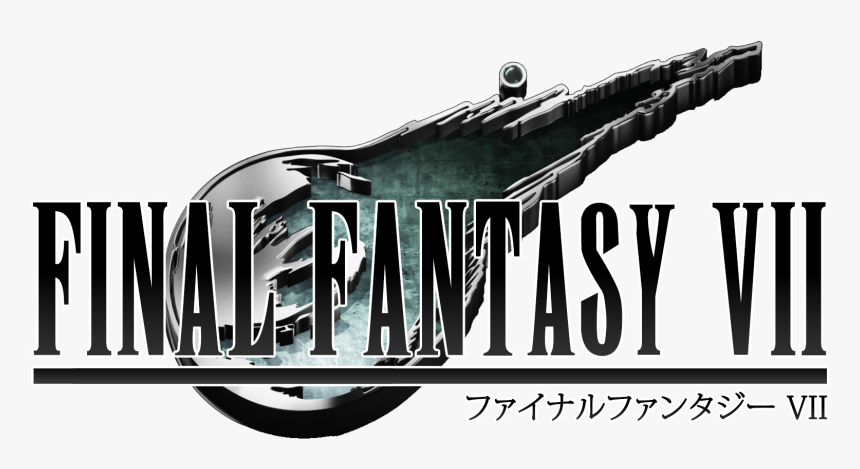
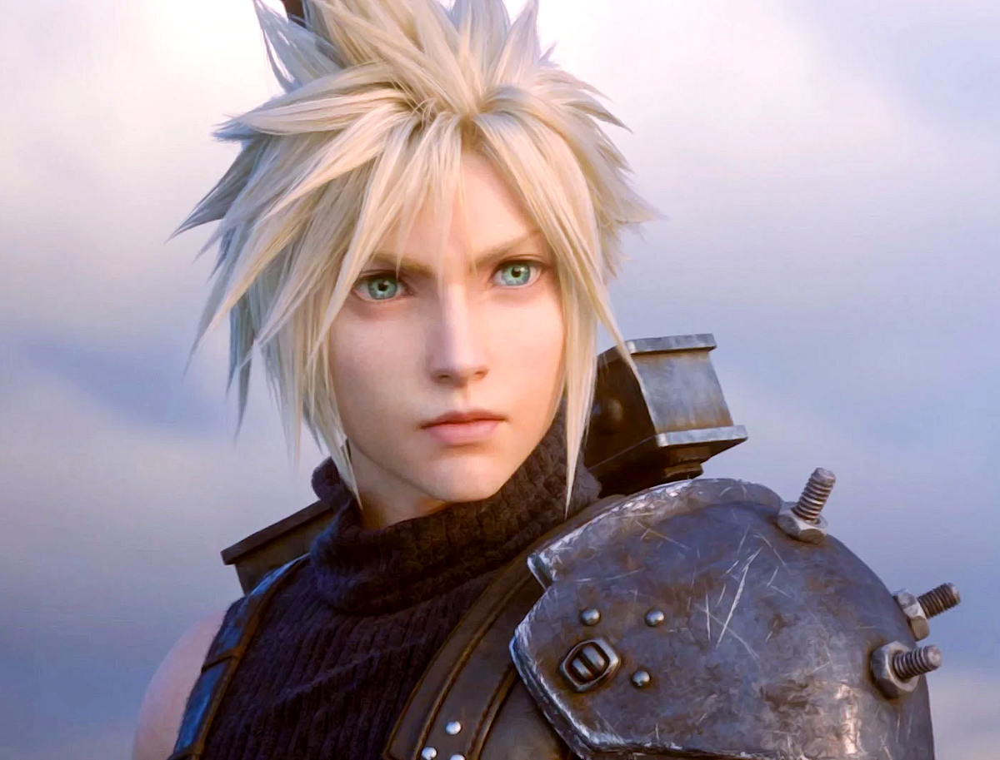
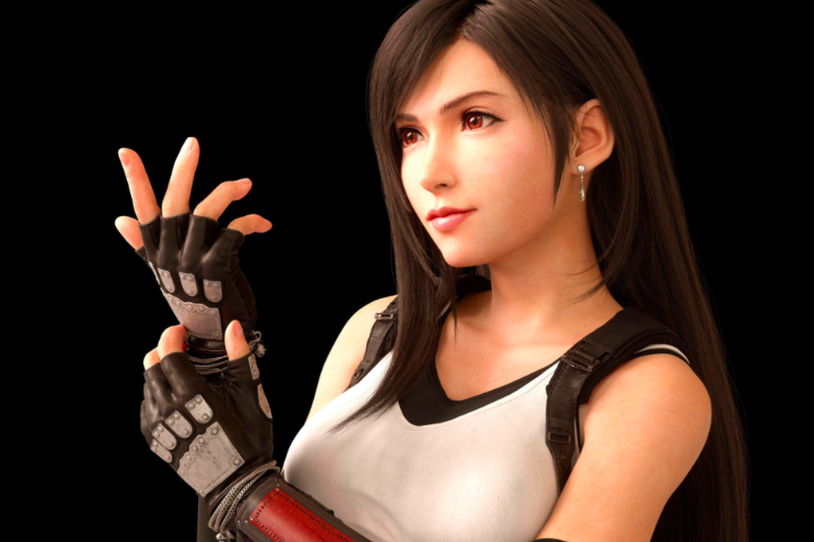
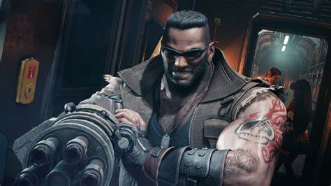

Main Characters
Cloud

Former First Class SOLDIER. After defecting from Shinra, Cloud began work as a mercenary for hire in Midgar. With his trusty broadsword in hand, he always gets the job done.
- Unkown
Cloud Strife is the main protagonist of Final Fantasy VII, Final Fantasy VII Remake, and Final Fantasy VII: Advent Children. He also appears in the spin-off games of the Compilation of Final Fantasy VII as a supporting character, including Dirge of Cerberus -Final Fantasy VII- and Crisis Core -Final Fantasy VII-.
An arrogant and proud swordsman at first, Cloud introduces himself to Avalanche as a former member of an elite warrior unit called SOLDIER who has turned mercenary, and uninterested in anything beyond his hired task at hand. Beneath his hardened outer persona is a softer, more caring individual who simply struggles to open up, but is striving to be a hero. Cloud later discovers more about his past and, with the help of his friends, learns there is more to being a hero than possessing physical strength and fame. He develops compassion for the planet and the people he fights to protect from the Shinra Electric Power Company and his nemesis, Sephiroth.
Tifa

A member of the anti-Shinra militant group Avalanche. Tifa manages Seventh Heaven, a bar located in the Sector 7 slums. A student of Zangan-style martial arts, she can clobber opponents with her fleet-footed combat techniques.
- Unkown
Tifa Lockhart is a playable character in Final Fantasy VII and Final Fantasy VII Remake. She is the main protagonist of the novel Final Fantasy VII Remake Trace of Two Pasts, and also plays a supportive role in Final Fantasy VII: Advent Children, Dirge of Cerberus -Final Fantasy VII-, and Crisis Core -Final Fantasy VII-. She is a friend of Cloud Strife, and a member of the resistance group Avalanche.
Tifa grew up with Cloud in Nibelheim, but lost contact with him years ago. When she meets him again, she convinces him to join Avalanche to fight the Shinra Electric Power Company, whom she bears hatred for due to the destruction of their hometown. She supports Cloud as his comrade and helps him and his allies fight Sephiroth. Tifa is reserved and empathic, acting as a motherly figure towards her allies when providing encouragement and emotional support. She also serves as the voice of reason grounding them to think things through and do the right thing.
Aerith

A flower peddler living in the Sector 5 slums, Aerith has been under Shinra surveillance all her life because of her unique background. Capable of sensing the planet's life force, she offers magical support to her comrades.
- Unkown
Aerith Gainsborough, alternately known with the first name Aeris, is a playable character in Final Fantasy VII and Final Fantasy VII Remake. She is one of the lead protagonists of the novel Final Fantasy VII Remake Trace of Two Pasts, and a major character in the Compilation of Final Fantasy VII, appearing in Final Fantasy VII: Advent Children, Crisis Core -Final Fantasy VII- and Before Crisis -Final Fantasy VII-.
Aerith is the last of the Cetra, an ancient race with powerful magical abilities, and so the Shinra Electric Power Company hunts her throughout her life, seeking to exploit her powers. She meets Cloud Strife in Midgar, and the two become close, leading her to join his quest to fight Shinra and hunt down Sephiroth. Aerith is upbeat, carefree, and joyful, being flirtatious towards Cloud and compassionate towards others.
Barret

A faction leader of the anti-Shinra militant group Avalanche. Barret is filled with a burning hatred for Shinra, a company he claims is destroying the planet. His right arm has been modified into a firearm, allowing him to attack his enemies at long range.
- Unkown
Barret Wallace is a playable character in Final Fantasy VII and Final Fantasy VII Remake, and a major recurring character in the Compilation of Final Fantasy VII. He is the leader of a cell of the eco-terrorist group Avalanche, trying to prevent Shinra Electric Power Company from using mako, the life source of the planet, as a form of energy.
Barret fights passionately for his cause to protect the planet. He cares greatly for his allies, motivating them with powerful speeches, while also himself fighting on the front lines of his cell's operations. His seemingly benevolent cause of fighting for the planet is a cover for his personal vendetta and anger, which he later must come to terms with. Despite his brash and sometimes violent attitude, Barret has a good heart, and is torn between fighting and caring for his daughter, Marlene.